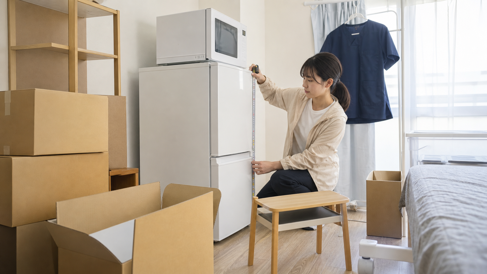
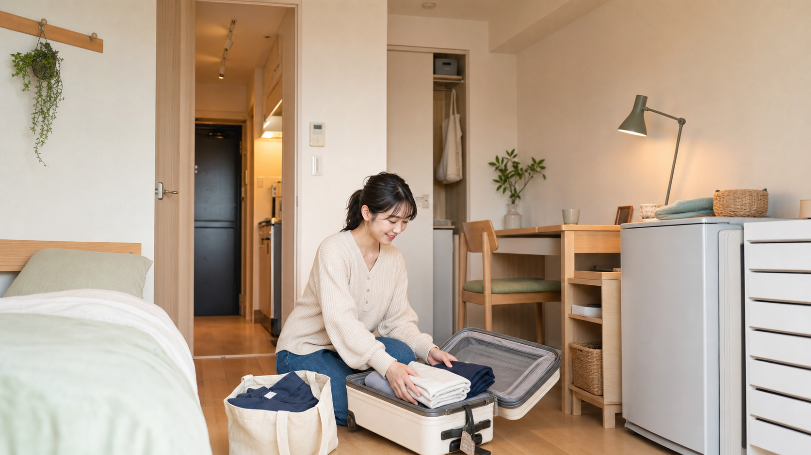

看護師は、一つの病院で働き続けることだけが前提ではありません。日本看護協会の2025年調査では、回答した看護職4,430人のうち50.9％に転職経験がありました。転職経験者が所属した勤務先は平均3.1か所です。
キャリアアップを目指す転職、住みたい地域への移住、一定期間だけ地域医療を支える応援ナース。勤務先と一緒に、住む場所を変える機会もあります。
ところが、職場を変えるたびに敷金や礼金を払い、冷蔵庫、洗濯機、ベッドまで買い直していたら、引っ越しの負担は小さくありません。すでに一人暮らしをしている人も、家具を運ぶ、預ける、手放すためのお金と手間がかかります。さらに看護師の場合は、早出や夜勤明けにも無理なく通えるかという視点も欠かせません。
転職時の住まいは、月々の家賃だけで決めず、「契約から退去までの総額」と「勤務のたびに積み重なる通勤時間」で比べましょう。寮、一般賃貸、家具家電付き住宅にはそれぞれ向く期間があります。次の移動がありそうなら、最初からすべてをそろえず、身軽に暮らし始める方法もあります。
広告・紹介について：本記事には紹介制度を利用できる外部リンクが含まれます。リンクの有無にかかわらず、住まいは料金、契約条件、通勤、設備を比較してご判断ください。
看護師の一人暮らし、1回の引っ越しにいくらかかる？
引っ越し費用は、トラックで荷物を運ぶ料金だけではありません。新しい部屋で生活を始めるまでに必要な費用を、次の4つに分けて考えると見落としにくくなります。
| 区分 | 主な内容 | 変わりやすい条件 |
|---|---|---|
| 賃貸契約 | 敷金、礼金、仲介手数料、保証料、火災保険、鍵交換、前家賃 | 家賃、地域、物件、特約 |
| 荷物の移動 | 引っ越し業者、梱包、交通、必要に応じて宿泊 | 距離、荷物量、時期、曜日 |
| 家具家電 | 冷蔵庫、洗濯機、電子レンジ、寝具、カーテン、照明 | 新品・中古、備え付け設備 |
| 退去・保管 | 原状回復、クリーニング、処分、トランクルーム | 契約、保管期間、家具の種類 |
一般賃貸の初期費用は家賃の4.5〜5か月分が一つの目安
不動産・住宅情報サイト「SUUMO」の2025年9月更新の解説記事では、賃貸契約時の初期費用について、家賃のおよそ4.5〜5か月分を一つの目安として示しています。たとえば家賃8万円なら、単純計算では36万〜40万円です。ただし、これは敷金や礼金などを含む一般的な目安で、地域、物件、契約条件によって大きく変わります。家具家電の購入費や引っ越し業者の料金まで、必ず含まれる数字ではありません。
「敷金・礼金ゼロ」と書かれた物件でも、保証会社利用料、鍵交換費用、クリーニング費用、短期解約違約金などが設定されることがあります。広告の家賃だけでなく、契約前に初期費用明細と特約を確認しましょう。
単身の引っ越し業者代は、時期と距離で変わる
LIFULL HOME'Sが運営する引っ越し情報ページでは、同じ都道府県内で単身者が引っ越す場合の参考値として、通常期（5月〜1月）は約4万5,000円、繁忙期（2月〜4月）は約6万7,000円という相場を掲載しています。実際の料金は、移動距離、荷物量、大型家具の有無、日時、作業条件などによって変わります。
家賃8万円なら賃貸契約の初期費用は36万〜40万円が一つの目安ですが、実際には物件ごとに異なり、さらに引っ越し代、家具家電、旧居の退去費用などが加わります。賃貸契約では候補物件ごとに初期費用の明細を出してもらい、不明な項目は契約前に確認しましょう。引っ越し業者は、荷物量や日時などの条件をそろえて相見積もりを取り、総額と作業内容を比べると判断しやすくなります。

今ある家具は「運ぶ・預ける・手放す」で比較する
実家から初めて一人暮らしをする人だけでなく、現在の賃貸から遠方へ転職する人もいます。すでに家具家電を持っている場合は、「新居へ運ぶ費用」「一時的に預ける費用」「売却や処分にかかる費用」と、今後また使う可能性を並べて考えましょう。
| 選択肢 | 向いているケース | 確認すること |
|---|---|---|
| 新居へ運ぶ | 長く使い、新居にも置ける | 運搬費、搬入経路、設置寸法 |
| 実家などに預ける | 短期勤務後にまた使う | 保管場所、劣化、再運搬 |
| トランクルーム | 戻る予定があり、預け先がない | 月額、最低期間、出し入れ |
| 売る・譲る | 使用可能で運搬費を省きたい | 売却日、搬出、個人間取引 |
| 処分する | 古い、新居に入らない | 回収日、処分・リサイクル料金 |
冷蔵庫・冷凍庫、洗濯機・衣類乾燥機、テレビ、エアコンの家庭用4品目は家電リサイクル法の対象です。自治体の粗大ごみとして一律に処分できるものではなく、製造業者やサイズによってリサイクル料金が異なり、収集運搬料が別にかかる場合があります。
数か月の応援ナースなら、大型家具を遠方まで往復させるより、預けて家具家電付き住宅へ入る方が負担を抑えられることがあります。一方、保管が長期になれば月額が積み重なるため、「運搬費＋保管費＋再運搬費」で比べましょう。
通勤時間は毎月積み重なる「見えない残業」
通勤時間は、一般には労働時間や時間外労働として扱われるものではありません。それでも、勤務のたびに必要となり、自由に使いにくい時間であることは確かです。この記事では、その生活上の拘束時間を比喩として「見えない残業」と呼びます。
交通費が勤務先から支給される場合でも、移動に使う時間まで戻ってくるわけではありません。また、支給には上限や対象条件があることもあります。家賃が安い郊外を選んでも、駐車場代、ガソリン代、終電後のタクシー代などが増えれば、自己負担が大きくなる可能性もあります。
月20日勤務として、片道15分の差は往復で1日30分、1か月で約10時間。片道30分の差なら約20時間です。これは「長い通勤は悪い」という意味ではありません。座って通える、乗り換えが少ない、買い物しやすいなど、同じ時間でも負担は変わります。
勤務帯ごとに通勤経路を調べる
- 日勤の始業前に、着替えを含めて間に合うか
- 早出の時間に電車やバスが動いているか
- 夜勤入りの時間帯に渋滞しないか
- 夜勤明けに乗り換えが多すぎないか
- 土日祝日も同じ本数があるか
- 終電後に帰宅する場合の代替手段があるか
中国南部の看護師380人を対象とした2025年の横断研究では、通勤ストレスが情緒的消耗を介してウェルビーイングと関連する可能性が報告されました。対象地域や研究方法には限界があり、日本の看護師へそのまま当てはめることはできませんが、住まい選びで通勤負担を無視しない理由にはなります。
CDC/NIOSHも、交代勤務と長時間労働による疲労は、帰宅時の自動車事故を含む安全上のリスクにつながり得ると説明しています。夜勤明けは「最短距離」だけでなく、無理に長時間運転せずに済むか、座って帰れるか、必要なら休めるかまで考えましょう。
寮・一般賃貸・家具家電付き住宅を比較する
どれか一つが、すべての看護師にとって正解とは限りません。滞在期間、職場との距離、自由に選びたい条件によって向き不向きが変わります。
| 比較項目 | 寮・借り上げ寮 | 一般賃貸 | 家具家電付き住宅 |
|---|---|---|---|
| 初期費用 | 抑えやすい傾向 | まとまって必要になりやすい | 契約・施設による |
| 家具家電 | 寮による | 原則自分で用意 | 付いていることが多い |
| 物件の自由度 | 低い傾向 | 高い | 空室・エリアによる |
| 短期滞在 | 勤務先規程による | 短期解約条件に注意 | 比較的選びやすい |
| 退職時 | 退去期限がある場合 | 勤務先と切り離せる | 契約終了日を確認 |
初期費用を抑える選択肢としての借り上げ寮
Smart Nurse Lab運営者は、新人から3年目ごろまで借り上げ寮に住みました。まだ給与や貯蓄に余裕があるとは言いにくい時期に、初期費用と住居費を抑えながら一人暮らしを始められたこと、病院へ通いやすかったことは大きな助けになりました。
これは運営者個人の経験であり、すべての寮が同じ条件ではありません。寮費、家具家電、入居期限、光熱費、部屋を選べる範囲、退職後の退去期限は勤務先ごとに確認してください。
長く住むなら一般賃貸も選びやすい
同じ地域で長く働く予定があり、間取りや設備を自分で選びたい人、すでに気に入った家具家電を持っている人には一般賃貸が合う可能性があります。勤務先を変えても住み続けられる点も利点です。
期間が未定なら家具家電付き住宅も候補になる
応援ナース、遠距離転職、入職日まで時間がない人は、家具家電付きのマンスリーやホテル型住居を選ぶ方法があります。最初の数か月をそこで暮らし、通勤や街との相性を確かめてから一般賃貸を探す使い方もできます。
住まいを決める前の5ステップ
特に見落としやすいのが、旧居の退去日と新居の入居日です。日程が重なれば二重家賃、間が空けば仮住まいや荷物保管が必要になります。転職先が決まったら、勤務開始日だけでなく、現職の最終勤務、引っ越し、住所変更、ライフライン開通までを一つのカレンダーに並べましょう。
家具家電付きの住まいが向いている看護師
- 応援ナースとして数か月単位で働く
- 遠方の病院へ転職し、入職まで時間がない
- 土地勘のない都会で、まず暮らしてみたい
- 次の転職や移住の可能性がある
- 一般賃貸へ入るまで仮住まいが必要
- 今の家具家電を遠方まで往復させたくない
- 家具の購入、組み立て、処分に時間を使いたくない
一方で、同じ地域へ長期間住み、広い部屋や設備を自由に選びたい人は、一般賃貸の方が月額や選択肢の面で合うことがあります。家具家電付きだから必ず総額が安いとは限りません。
goodroom residence・サブスくらしという選択肢

以前は、初期費用を抑えた家具家電付きの住まいといえば、勤務先の寮や一般的なマンスリーマンションが中心でした。現在は、ホテルや家具家電付き住宅を一定期間利用するサービスもあります。
goodroomの「サブスくらし」は、ホテルやマンスリーなどから住まいを探せるサービスです。公式案内では、ホテルは最短14日、マンスリーは1か月から利用でき、生活に必要な家具家電が付いた施設が紹介されています。goodroom residenceには、住民票を置けると案内されている施設もあります。
ただし、施設によって部屋の広さ、共用設備、料金、最低利用期間、住民票の扱いは異なります。表示された月額だけで決めず、初期費用、水道光熱費、インターネット、清掃費、延長・キャンセル条件、病院までの通勤を確認してください。キャンペーン価格も期間や対象が変わります。
紹介でサブスくらしに申し込むと、家賃が最大10,000円OFFになるポイントを受け取れる案内があります。申し込み時の「ご相談（任意）」欄に、紹介コード GSEMP6 を入力してください。
紹介特典、ポイント、対象プラン、適用条件は変更・終了する場合があります。申し込み前に公式ページで最新条件をご確認ください。本記事は契約を保証するものではなく、紹介コードの利用は任意です。
転職先の近くに希望期間だけ利用できる部屋があれば、「まず身軽に住み、勤務と街に慣れてから長期の住まいを決める」という選択がしやすくなります。
まとめ：次の職場へ、身軽に引っ越すという選択
転職時の住まいにかかるお金は、家賃だけではありません。敷金や礼金などの契約費用、引っ越し業者、家具家電、保管や処分、退去費用まで含めて総額を出すことが大切です。
通勤も、毎月積み重なる時間と費用です。日勤の経路だけでなく、早出、夜勤入り、夜勤明けまで確認しましょう。
病院の寮、一般賃貸、家具家電付き住宅には、それぞれ向いている期間と暮らし方があります。これから何年住むか分からないなら、急いですべてをそろえず、まず身軽に生活を始める方法もあります。費用、通勤、滞在期間を並べ、自分が安心して休める生活拠点を選んでください。
参考資料・出典
- 日本看護協会：2025年 看護職員実態調査報告書
- 日本看護協会：2024年 病院看護実態調査報告書
- 国土交通省：賃貸住宅の入居・退去に係る留意点
- 国土交通省：民間賃貸住宅（賃貸住宅標準契約書・原状回復ガイドライン）
- 国民生活センター：賃貸住宅の原状回復トラブルにご注意！
- SUUMO：賃貸契約に必要な初期費用の相場
- LIFULL引越し：単身の引越料金相場
- 経済産業省：家電リサイクル法
- Li D, et al. The Relationship Between Commuting Stress and Nurses' Well-Being. 2025.
- CDC/NIOSH：How Shift Work and Long Work Hours Increase Health and Safety Risks
- goodroom：サブスくらしの特徴・利用案内
- goodroom：サブスくらし友達紹介
本記事は2026年7月25日時点で確認できる情報をもとに作成しています。家賃、初期費用、引っ越し料金、住宅手当、寮費、サービス内容は地域、時期、勤務先、物件、契約によって異なります。契約前に勤務先規程、見積書、重要事項説明書、契約書、各サービスの公式情報をご確認ください。掲載画像はすべて生成イメージであり、人物、物件、施設は実在のものではありません。